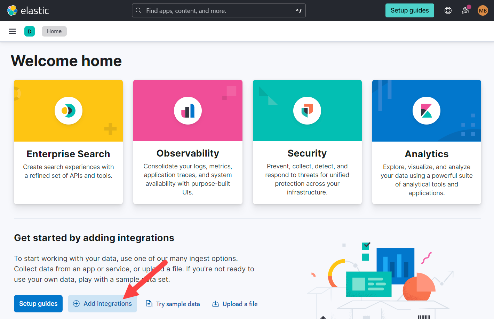

Stream a log fileedit
In this guide, you’ll learn how to take a log file from your host and send it to Elasticsearch using a standalone Elastic Agent. You’ll configure the Elastic Agent and your data streams using the Custom Logs integration. From there, you’ll learn how to query your logs and use the data streams you’ve set up to have more control and flexibility when filtering your log data.
Prerequisitesedit
To follow the steps in this guide, you need an Elastic Stack deployment that includes:
- Elasticsearch for storing and searching data
- Kibana for visualizing and managing data
-
Kibana user with
Allprivileges on Fleet and Integrations. Since many Integrations assets are shared across spaces, users need the Kibana privileges in all spaces. - Integrations Server (included by default in every Elasticsearch Service deployment)
To get started quickly, spin up a deployment of our hosted Elasticsearch Service. The Elasticsearch Service is available on AWS, GCP, and Azure. Try it out for free.
Install and configure the standalone Elastic Agentedit
Install and configure the standalone Elastic Agent to send your log data to Elasticsearch by completing the following steps:
- Download and extract the Elastic Agent installation package.
- Configure the Elastic Agent using the Custom Logs integration.
- Install and start the Elastic Agent.
Step 1: Download and extract the Elastic Agent installation packageedit
On your host, download and extract the installation package that corresponds with your system:
curl -L -O https://artifacts.elastic.co/downloads/beats/elastic-agent/elastic-agent-8.9.0-darwin-x86_64.tar.gz tar xzvf elastic-agent-8.9.0-darwin-x86_64.tar.gz
curl -L -O https://artifacts.elastic.co/downloads/beats/elastic-agent/elastic-agent-8.9.0-linux-x86_64.tar.gz tar xzvf elastic-agent-8.9.0-linux-x86_64.tar.gz
# PowerShell 5.0+ wget https://artifacts.elastic.co/downloads/beats/elastic-agent/elastic-agent-8.9.0-windows-x86_64.zip -OutFile elastic-agent-8.9.0-windows-x86_64.zip Expand-Archive .\elastic-agent-8.9.0-windows-x86_64.zip
Or manually:
- Download the Elastic Agent Windows zip file from the download page.
- Extract the contents of the zip file.
To simplify upgrading to future versions of Elastic Agent, we recommended that you use the tarball distribution instead of the DEB distribution.
curl -L -O https://artifacts.elastic.co/downloads/beats/elastic-agent/elastic-agent-8.9.0-amd64.deb sudo dpkg -i elastic-agent-8.9.0-amd64.deb
To simplify upgrading to future versions of Elastic Agent, we recommended that you use the tarball distribution instead of the RPM distribution.
curl -L -O https://artifacts.elastic.co/downloads/beats/elastic-agent/elastic-agent-8.9.0-x86_64.rpm sudo rpm -vi elastic-agent-8.9.0-x86_64.rpm
Step 2: Configure the Elastic Agentedit
You can use the Custom Logs integration in Kibana to create and download an Elastic Agent policy. Your agent policy sets the path to your log file and sets up your data streams.
Complete the following steps to create and download your Elastic Agent policy:
-
Go to the Kibana home page and click Add integrations:
 - In the search bar, search for custom and select Custom Logs.
-
Click Add Custom Logs in the upper-right corner:

- Click Install Elastic Agent.
-
Click standalone mode:

- Add the path to your log file in the Log file path field.
-
Set the name for your dataset data stream in the Dataset name field. The dataset name describes the data ingested and its structure. This field can contain anything that signifies the source of the data. The default value is
generic. -
Click Advanced options to open the Integration settings.

-
Set the name for your namespace data stream in the Namespace field. The namespace is useful for grouping data such as an environment (dev, prod, or qa), a team, or a strategic business unit. Using a namespace makes it easier to search for data from a given source by using a matching pattern. The default value is
default. - Click Save and continue.
-
Click Copy to clipboard, and paste the configuration in the
elastic-agent.ymlfile located on your host where you extracted the Elastic Agent installation package. - We recommend using an API key to grant the agent access to Elasticsearch. To create an API key for your agent, see Create API keys for standalone agents.
-
Replace
username: '${ES_USERNAME}'andpassword: '${ES_PASSWORD}'withapi_key:in theelastic-agent.ymlfile, and add the API key you created in the previous step. For example:[...] outputs: default: type: elasticsearch hosts: - 'https://da4e3a6298c14a6683e6064ebfve9ace.us-central1.gcp.cloud.es.io:443' api_key: _Nj4oH0aWZVGqM7MGop8:349p_U1ERHyIc4Nm8_AYkw [...]The format of the key is <id>:<key>. Make sure you selected Beats when you created your API key. Base64 encoded API keys are not currently supported in this configuration.
Step 3: Install and start the Elastic Agentedit
With your configuration set, you’re ready to install the Elastic Agent. From the agent directory, run the the command that corresponds with your system to install the Elastic Agent as a service. Do not enroll the agent in Fleet.
On macOS, Linux (tar package), and Windows, run the install command to
install Elastic Agent as a managed service and start the service. The DEB and RPM
packages include a service unit for Linux systems with
systemd, so just enable then start the service.
You must run this command as the root user because some integrations require root privileges to collect sensitive data.
sudo ./elastic-agent install
You must run this command as the root user because some integrations require root privileges to collect sensitive data.
sudo ./elastic-agent install
Open a PowerShell prompt as an Administrator (right-click the PowerShell icon and select Run As Administrator).
From the PowerShell prompt, change to the directory where you installed Elastic Agent, and run:
.\elastic-agent.exe install
You must run this command as the root user because some integrations require root privileges to collect sensitive data.
You must run this command as the root user because some integrations require root privileges to collect sensitive data.
View and search your dataedit
With your Elastic Agent and data streams configured, you can now view, filter, and search your log data. In Kibana, navigate to Observability → Logs → Stream, and use the search bar to search for your data_stream.type, data_stream.dataset, and data_stream.namespace.
See the following examples for ways to search specific data types, datasets, or namespaces:
-
data_stream.type: logsshowslogsdata streams. -
data_stream.dataset: nginx.accessshows data streams with annginx.accessdataset. -
data_stream.namespace: web-frontendshows data streams withweb-frontendnamespace.
The following example shows the search results for logs with an apm.error dataset and a default namespace:
What’s next?edit
For more information on deploying and managing logs in Elastic Observability, see the following links:
- The Resource guide consolidates links to documentation on sending log data, configuring logs, and analyzing logs.
- Log monitoring has information on visualizing and analyzing logs.